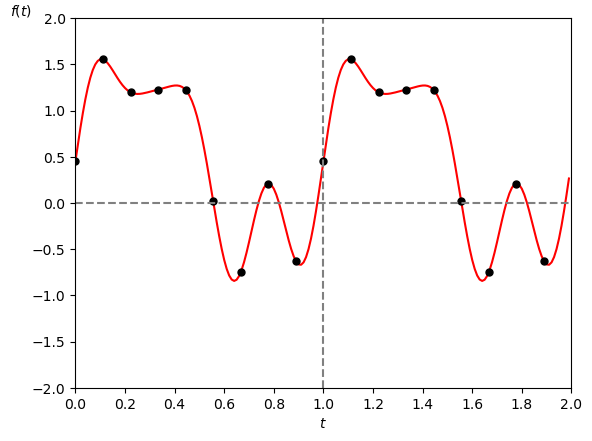
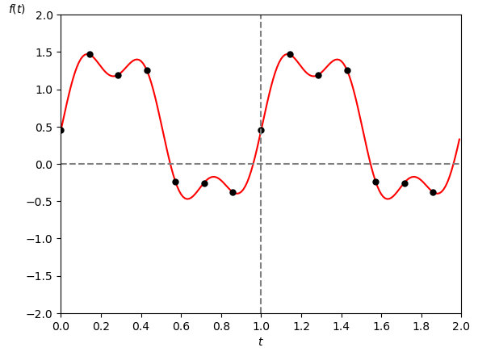
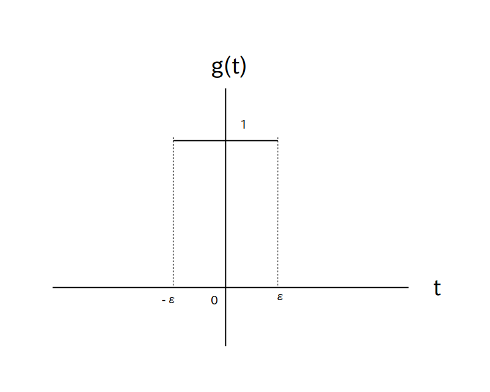
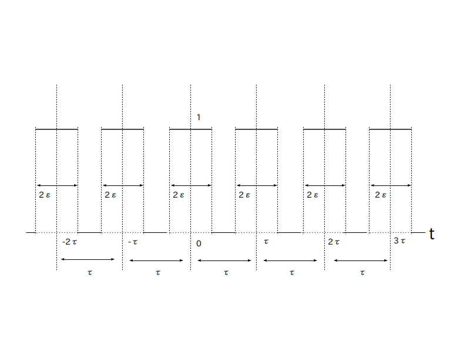
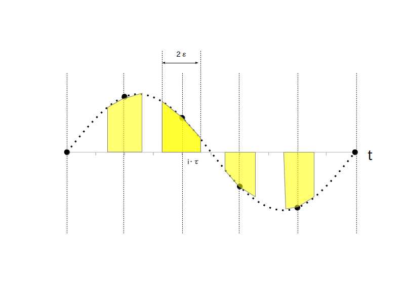
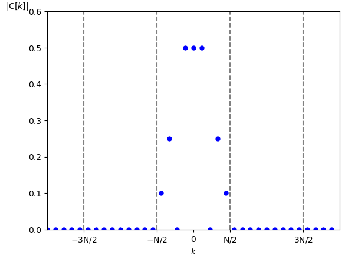
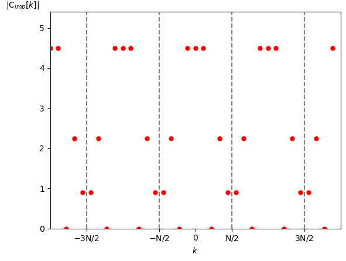

クリックすると拡大します。
※ $f(t)$ は「周期的」

IDFT の式を見て複素フーリエ級数展開
\[ f(t) = \sum_{k = -\infty}^{\infty} \left \{ \textrm{C}[k] \cdot \textrm{e}^{\{j \cdot k \cdot w_1 \cdot t \}} \right \} \]を思い出した人がいると思いますが
DFT 係数は複素フーリエ係数のディジタル信号版
同様に
IDFT は複素フーリエ級数展開のディジタル信号版
に相当します。
ここでは DFT とフーリエ級数展開の関係について話します。
※ 長い割に結論は上に書いた通りなので、必要無い人はこのページを飛ばして結構です。
これらの関係を相関図にして示したのが図1です。
クリックすると拡大します。
※ $f(t)$ は「周期的」
では図1に示した関係について、経路別に説明していきます。
なお大本となるアナログ信号 $f(t)$ は「周期的」であるとします。
まずは大本となる周期的なアナログ信号 $f(t)$ をサンプリングしないと何も話が進まないので、$f(t)$ にくし型関数をかけてインパルス列 $f_{imp}(t)$ を作り出します。
インパルス列は一応分類的にはアナログ信号なのですが、ディジタル信号の性質も持っているという現実には存在しない、アナログ信号とディジタル信号の境目にいるような信号です。
このインパルス列が橋渡し役となってアナログ信号の世界とディジタル信号が結び付けられています。
$f(t)$ を周期 $\textrm{T}$ [秒]、基本角周波数 $w_1 = 2\pi/\textrm{T}$ [rad/秒]の周期的な時間領域アナログ信号とする。
またサンプリング間隔を $\tau$ [秒]、サンプリング角周波数を $w_s = 2\pi/\tau = $ [rad/秒] とした くし型関数
※ comb はくしの英文です。
を定義する。
ここで $\delta(t)$ はデルタ関数である。
なお今回は話を簡単にするために周期 $\textrm{T}$ [秒]はサンプリング間隔 $\tau$ [秒]で割り切れる数であるとして
\begin{align*} \textrm{N} & = \frac{\textrm{T}}{\tau} \\[10pt] \textrm{T} & = \textrm{N}\cdot \tau \\[10pt] w_1 &= \frac{w_s}{\textrm{N}} \end{align*}が成り立つ正整数 $\textrm{N}$ があるとする。
この時、$f(t)$ にくし型関数 $\textrm{comb}(t)$ をかけて作った信号
\begin{align*} f_{imp}(t) &= f(t) \cdot \textrm{comb}(t) \\[10pt] &= f(t) \cdot \sum_{i=-\infty}^{\infty} \delta(t - i \cdot \tau ) \\[10pt] &= \sum_{i=-\infty}^{\infty} f( i \cdot \tau ) \cdot \delta(t - i \cdot \tau )\\[10pt] &= \sum_{i=0}^{\textrm{N-1}} \left \{ f( i \cdot \tau ) \cdot \sum_{a=-\infty}^{\infty} \delta( t - (a \cdot \textrm{N} + i) \cdot \tau ) \right \} \end{align*}※ imp は impulse の略です。
を「$f(t)$ をサンプリングして生成した周期的なインパルス列」と呼び、そのサンプリング周期は $\textrm{N}$ [点]となる。
インパルス列についてもう少し詳しく説明しましょう。
まず定義中に出てきたくし型関数 $\textrm{comb}(t)$ は $\delta(t)$ を $\tau$ [秒]おきに並べた信号で、グラフにすると図2で表されます。
$\tau$ [秒] はサンプリング間隔

この様にくし型関数は $\tau$ [秒]おきにしか値を持ちませんので
\[ f_{imp}(t) = f(t) \cdot \sum_{i=-\infty}^{\infty} \delta(t - i \cdot \tau ) \]は
\[ f_{imp}(t) = \sum_{i=-\infty}^{\infty} f( i \cdot \tau ) \cdot \delta(t - i \cdot \tau ) \]
に変わります。
さらに今回は周期 $\textrm{T}$ [秒]の周期的な信号ですので、$a$ を任意の整数としたとき
が成り立ちます。
よって
となります。
先に進む前に(1)の逆経路について書いておきます。
$f(t)$ を周期 $\textrm{T}$ [秒]、基本角周波数 $w_1 = 2\pi/\textrm{T}$ [rad/秒]の周期的な時間領域アナログ信号とする。
また $f(t)$ を サンプリング間隔 $\tau$ [秒]、サンプリング角周波数 $w_s = 2\pi/\tau$ [rad/秒] で サンプリングして生成した周期的なインパルス列を $f_{imp}(t)$ とする。
なお今回は話を簡単にするために周期 $\textrm{T}$ [秒]はサンプリング間隔 $\tau$ [秒]で割り切れる数であるとして
\begin{align*} \textrm{N} & = \frac{\textrm{T}}{\tau} \\[10pt] \textrm{T} & = \textrm{N}\cdot \tau \\[10pt] w_1 &= \frac{w_s}{\textrm{N}} \end{align*}が成り立つ正整数 $\textrm{N}$ があるとする。
もしサンプリング時にエイリアシングが発生していなければ、$f(t)$ は $f_{imp}(t)$ と
\begin{align*} \tau \cdot \sum_{k=-\lfloor \frac{\textrm{N}}{2} \rfloor}^{\lfloor \frac{\textrm{N}}{2} \rfloor} \ \textrm{e}^{j\cdot k\cdot w_1 \cdot t} &= \tau \cdot \left \{ 1 + \sum_{k=1}^{\lfloor \frac{\textrm{N}}{2} \rfloor} 2 \cdot \cos ( k \cdot w_1 \cdot t ) \right \} \end{align*}
の周期的畳み込み演算により求まる。
ここで $\lfloor\rfloor$ は床関数である。
すなわち
※ 式中の * は畳み込み積分です。
サンプリング時にエイリアシングが発生していると完全復元は出来ませんので、今回はエイリアシングが発生していないと仮定して話を進めます。
詳しくは(6)の経路で説明しますが、インパルス列を元の信号に復元するためには周波数領域で複素フーリエ係数の $-\lfloor \frac{\textrm{N}}{2} \rfloor$ から $\lfloor \frac{\textrm{N}}{2} \rfloor$ 番目だけ切り出したあと $\tau$ をかけるという、いわゆる理想ローパスフィルタ処理を行います。
この切り出し処理を複素フーリエ級数展開すると
ですので、あとはこれと $f_{imp}(t)$ を畳み込むと $f(t)$ が復元します。
つまり
が得られます。
参考までに例を示しましょう。
元の周期的なアナログ信号を
とします(図3)。
ここで周期は $\textrm{T}=1$ [秒]、基本角周波数 $w_1 = 2\pi$ [rad/秒] ですので、最大角周波数は $4 \cdot w_1 = 8 \pi$ [rad/秒]となります。
また図中の黒点はサンプリング点で、エイリアシングを起こさないためには $16\pi$ [rad/秒] より大きいサンプリング周波数でサンプリングする必要があります。
ここでサンプリング周波数 $w_s = \textrm{N} \cdot w_1$ より
ですので、今回はサンプリング周期 を $\textrm{N} = 9$ [点]としました。
周期: $\textrm{T}=1$ [秒]
サンプリング周期: $\textrm{N} = 9$ [点]

このサンプリング点より復元した信号のグラフが次の図4です。
この様にちゃんと元の信号が復元されていることが分かります。
サンプリング周期: $\textrm{N} = 9$ [点]

ちなみにサンプリング点を $\textrm{N} = 7$ [点]に減らした例が図5です。
この様にエイリアシングが生じて復元に失敗しています。
サンプリング周期: $\textrm{N} = 7$ [点]
参考までに、上のグラフを描画したプログラムはこちらです。
では周波数領域に入っていきます。
$f(t)$ を周期 $\textrm{T}$ [秒]、基本角周波数 $w_1 = 2\pi/\textrm{T}$ [rad/秒]の周期的な時間領域アナログ信号とする。
また $f(t)$ をサンプリング間隔 $\tau$ [秒]、サンプリング角周波数 $w_s = 2\pi/\tau$ [rad/秒]で サンプリングして生成した周期的なインパルス列を $f_{imp}(t)$ とする。
なお今回は話を簡単にするために周期 $\textrm{T}$ [秒]はサンプリング間隔 $\tau$ [秒]で割り切れる数であるとして
\begin{align*} \textrm{N} & = \frac{\textrm{T}}{\tau} \\[10pt] \textrm{T} & = \textrm{N}\cdot \tau \\[10pt] w_1 &= \frac{w_s}{\textrm{N}} \end{align*}が成り立つ正整数 $\textrm{N}$ があるとする。
この時、$f_{imp}(t)$ の複素フーリエ係数は次の式で与えられる
\[ \textrm{C}_{imp}[k] = \frac{1}{\textrm{N}\cdot \tau} \sum_{i=0}^{\textrm{N-1}} \left \{ f( i \cdot \tau ) \cdot \textrm{e}^{\{-j \cdot k \cdot \frac{2\pi}{\textrm{N}} \cdot i \}} \right \} \]素直に複素フーリエ係数を計算すれば証明できます。
\begin{align*} \textrm{C}_{imp}[k] &= \frac{1}{\textrm{T}} \int_{0}^{\textrm{T}} \left \{ f_{imp}(t) \cdot \textrm{e}^{\{-j \cdot k \cdot w_1 \cdot t \}} \right \} \ \textrm{d}t \\[10pt] &= \frac{1}{\textrm{T}} \int_{0}^{\textrm{T}} \left [ \sum_{i=0}^{\textrm{N-1}} \left \{ f( i \cdot \tau ) \cdot \sum_{a=-\infty}^{\infty} \delta( t - (a \cdot \textrm{N} + i) \cdot \tau ) \right \} \right ] \cdot \textrm{e}^{\{-j \cdot k \cdot w_1 \cdot t \}} \ \textrm{d}t \\[10pt] &= \frac{1}{\textrm{T}} \sum_{i=0}^{\textrm{N-1}} \left [ f( i \cdot \tau ) \cdot \int_{0}^{\textrm{T}} \sum_{a=-\infty}^{\infty} \left \{ \delta( t - (a \cdot \textrm{N} + i) \cdot \tau ) \cdot \textrm{e}^{\{-j \cdot k \cdot w_1 \cdot t \}} \right \} \ \textrm{d}t \right ] \\[10pt] (0 \leq t \lt \textrm{T} \ \text{区間以外は考えなくて良いので}) &= \frac{1}{\textrm{T}} \sum_{i=0}^{\textrm{N-1}} \left [ f( i \cdot \tau ) \cdot \int_{0}^{\textrm{T}} \left \{ \delta( t - i \cdot \tau ) \cdot \textrm{e}^{\{-j \cdot k \cdot w_1 \cdot t \}} \right \} \ \textrm{d}t \right ] \\[10pt] (\text{デルタ関数の性質より}) &= \frac{1}{\textrm{T}} \sum_{i=0}^{\textrm{N-1}} \left \{ f( i \cdot \tau ) \cdot \textrm{e}^{\{-j \cdot k \cdot w_1 \cdot i \cdot \tau \}} \right \} \\[10pt] (w_1 = 2\pi/\textrm{T} = 2\pi/(\textrm{N}\cdot\tau) \text{より}) &= \frac{1}{\textrm{N}\cdot\tau} \sum_{i=0}^{\textrm{N-1}} \left \{ f( i \cdot \tau ) \cdot \textrm{e}^{\{-j \cdot k \cdot \frac{2\pi}{\textrm{N}} \cdot i \}} \right \} \\[10pt] \end{align*}
数学的には以上で証明が終わりなのですが、インパルス列はデルタ関数を含んでいるので、その複素フーリエ係数を求めるときに何をしてるのかピンとこないという人がいるかもしれません。
そこで以下では厳密な話は脇に置いといて、インパルス列の複素フーリエ係数を求め方について感覚的、イメージ的に補足説明したいと思います。
※ という訳で数学的に変なところがあってもあまり気にせず、雰囲気だけ感じ取って下さい。
まず $f(t)$ にくし型関数をかけないでそのまま複素フーリエ係数を求めてみます。
つまり
の複素フーリエ係数を求めてみます。
ところがこの $f'_{imp}(t)$ は不連続点だけで値を持つ関数になるので、複素フーリエ係数を求めても結果は当然 0 になります。
そこで次は図 6 で示される幅 $2\epsilon$ [秒]の矩形状の窓関数 $g(t)$ を定義し、図 7 の様にサンプリング間隔 $\tau$ 秒おきに $g(t)$ を並べてパルス波を作り、図8の様にそのパルス波を $f_{imp}(t)$ にかけて一部の範囲を切り出してから複素フーリエ係数を求める事を考えます。
$\epsilon$ を微小な正の定数とする

$\epsilon$ を微小な正の定数とする


ただし $\epsilon$ が小さいとやはり積分結果がほぼ 0 になってしまうので、積分結果が 0 にならないように $\epsilon$ の関数 \[ \alpha(\epsilon) \rightarrow \infty \ (\epsilon \rightarrow 0) \]
をゲインの調整目的で更にかけておきます(具体的な $\alpha(\epsilon)$ の中身については後で述べます)。
まとめると
というアナログ信号 $f'_{imp}(t,\epsilon)$ の複素フーリエ係数を求めます。
すると今回は
\begin{align*} \textrm{C}'_{imp}[k,\epsilon] &= \frac{1}{\textrm{T}} \int_{0}^{\textrm{T}} f'_{imp}(t,\epsilon) \cdot \textrm{e}^{\{-j \cdot k \cdot w_1 \cdot t \}} \ \textrm{d}t \\[10pt] &= \frac{1}{\textrm{T}} \cdot \alpha(\epsilon) \cdot \sum_{i=0}^{\textrm{N}-1} \cdot \int_{i \cdot \tau-\epsilon}^{i \cdot \tau +\epsilon} f(t) \cdot \textrm{e}^{\{-j \cdot k \cdot w_1 \cdot t \}} \ \textrm{d}t \\[10pt] \end{align*}
が得られます。
ここで積分の平均値の定理より
を満たす $\xi_i$ が
\begin{align*} i \cdot \tau - \epsilon \leq \xi_i \leq i \cdot \tau + \epsilon \end{align*}の範囲に必ず存在しますので、この式を代入し、
\[ (\text{続き}) = \frac{1}{\textrm{T}} \cdot \alpha(\epsilon) \cdot \sum_{i=0}^{\textrm{N}-1} \left \{ 2\epsilon \cdot f(\xi_i) \cdot \textrm{e}^{\{-j \cdot k \cdot w_1 \cdot \xi_i \}} \right \} \]となります。
さてここで $\alpha(\epsilon) = 1/2\epsilon$ とします。
すると $\alpha(\epsilon) \cdot 2\epsilon = 1$ で、かつ
なので、$\epsilon \rightarrow 0$ の時、 $\alpha(\epsilon) \cdot g(t - i \cdot \tau )$ は $\delta(t - i \cdot \tau)$ に変わります。
よって
となり、さらに $\epsilon \rightarrow 0 $ とすることで $\xi_i \rightarrow i \cdot \tau$ ですので
\begin{align*} \lim_{\epsilon \rightarrow 0} \textrm{C}'_{imp}[k,\epsilon] &= \textrm{C}_{imp}[k] \\[10pt] &= \frac{1}{\textrm{T}} \sum_{i=0}^{\textrm{N}-1} \left \{ f(i \cdot \tau ) \cdot \textrm{e}^{\{-j \cdot k \cdot w_1 \cdot i \cdot \tau \}} \right \} \\[10pt] (w_1 = 2\pi/\textrm{T} = 2\pi/(\textrm{N}\cdot\tau) \text{より}) &= \frac{1}{\textrm{N}\cdot \tau} \sum_{i=0}^{\textrm{N}-1} \left \{ f(i \cdot \tau ) \cdot \textrm{e}^{\{-j \cdot k \cdot \frac{2\pi}{\textrm{N}} \cdot i \}} \right \} \end{align*}が得られます。
$\textrm{C}_{imp}[k]$ の性質についてもう少し補足しましょう。
$n$ を任意の整数とした時
ですので
$\textrm{C}_{imp}[k]$ は周期 $\textrm{N}$ [点]の周期的な信号
となります。
(3)の逆経路です。
$f(t)$ を周期 $\textrm{T}$ [秒]、基本角周波数 $w_1 = 2\pi/\textrm{T}$ [rad/秒]の周期的な時間領域アナログ信号とする。
また $f(t)$ をサンプリング間隔 $\tau$ [秒]、サンプリング角周波数 $w_s = 2\pi/\tau$ [rad/秒]で サンプリングして生成した周期的なインパルス列を $f_{imp}(t)$ とする。
さらに $f_{imp}(t)$ の複素フーリエ係数 を $\textrm{C}_{imp}[k]$ とする。
なお今回は話を簡単にするために周期 $\textrm{T}$ [秒]はサンプリング間隔 $\tau$ [秒]で割り切れる数であるとして
\begin{align*} \textrm{N} & = \frac{\textrm{T}}{\tau} \\[10pt] \textrm{T} & = \textrm{N}\cdot \tau \\[10pt] w_1 &= \frac{w_s}{\textrm{N}} \end{align*}が成り立つ正整数 $\textrm{N}$ があるとする。
この時、$f_{imp}(t)$ の複素フーリエ級数展開は次の式で与えられる。
\[ f_{imp}(t) = \tau \cdot \sum_{k=0}^{\textrm{N-1}} \left \{ \textrm{C}_{imp}[k] \cdot \textrm{e}^{\{j \cdot k \cdot w_1 \cdot t \}} \right \} \cdot \textrm{comb}(t) \]$\textrm{C}_{imp}[k]$ は周期 $\textrm{N}$の周期的な信号であることを利用して、普通に複素フーリエ級数展開すると証明できます。
\begin{align*} f_{imp}(t) &= \sum_{k=-\infty}^{\infty} \textrm{C}_{imp}[k] \cdot \textrm{e}^{\{j \cdot k \cdot w_1 \cdot t \}} \\[10pt] &= \left \{ \begin{array}{llll} \hspace{4em}\vdots & \hspace{4em}\vdots & & \hspace{6em}\vdots \\ \textrm{C}_{imp}[0] \cdot \textrm{e}^{\{j \cdot 0 \cdot w_1 \cdot t \}} &+ \textrm{C}_{imp}[1] \cdot \textrm{e}^{\{j \cdot 1 \cdot w_1 \cdot t \}} & \cdots &+ \textrm{C}_{imp}[\textrm{N}-1] \cdot \textrm{e}^{\{j \cdot (\textrm{N}-1) \cdot w_1 \cdot t \}} \\ + \textrm{C}_{imp}[0] \cdot \textrm{e}^{\{j \cdot \textrm{N} \cdot w_1 \cdot t \}} &+ \textrm{C}_{imp}[1] \cdot \textrm{e}^{\{j \cdot (\textrm{N}+1) \cdot w_1 \cdot t \}} & \cdots &+ \textrm{C}_{imp}[\textrm{N}-1] \cdot \textrm{e}^{\{j \cdot (\textrm{N}+\textrm{N}-1) \cdot w_1 \cdot t \}} \\ + \textrm{C}_{imp}[0] \cdot \textrm{e}^{\{j \cdot (2\textrm{N}) \cdot w_1 \cdot t \}} &+ \textrm{C}_{imp}[1] \cdot \textrm{e}^{\{j \cdot (2\textrm{N}+1) \cdot w_1 \cdot t \}} & \cdots &+ \textrm{C}_{imp}[\textrm{N}-1] \cdot \textrm{e}^{\{j \cdot (2\textrm{N} + \textrm{N}-1) \cdot w_1 \cdot t \}} \\ \hspace{4em}\vdots & \hspace{4em}\vdots & & \hspace{6em}\vdots \\ \end{array} \right \} \\[10pt] &= \sum_{k=0}^{\textrm{N-1}} \left \{ \textrm{C}_{imp}[k] \cdot \sum_{a=-\infty}^{\infty} \textrm{e}^{\{j \cdot (a\cdot\textrm{N}+i) \cdot w_1 \cdot t \}} \right \} \\[10pt] &= \sum_{k=0}^{\textrm{N-1}} \left \{ \textrm{C}_{imp}[k] \cdot \sum_{a=-\infty}^{\infty} \textrm{e}^{\{j \cdot a\cdot\textrm{N} \cdot w_1 \cdot t \}} \cdot \textrm{e}^{\{j \cdot i \cdot w_1 \cdot t \}} \right \} \\[10pt] &= \sum_{k=0}^{\textrm{N-1}} \left \{ \textrm{C}_{imp}[k] \cdot \textrm{e}^{\{j \cdot i \cdot w_1 \cdot t \}} \right \} \cdot \sum_{a=-\infty}^{\infty} \textrm{e}^{\{j \cdot a\cdot\textrm{N} \cdot w_1 \cdot t \}} \\[10pt] &= \tau \cdot \sum_{k=0}^{\textrm{N-1}} \left \{ \textrm{C}_{imp}[k] \cdot \textrm{e}^{\{j \cdot i \cdot w_1 \cdot t \}} \right \} \cdot \left \{ \frac{1}{\tau} \sum_{a=-\infty}^{\infty} \textrm{e}^{\{j \cdot a \cdot \frac{2\pi}{\tau} \cdot t \}} \right \} \\[10pt] &= \tau \cdot \sum_{k=0}^{\textrm{N-1}} \left \{ \textrm{C}_{imp}[k] \cdot \textrm{e}^{\{j \cdot k \cdot w_1 \cdot t \}} \right \} \cdot \textrm{comb}(t) \end{align*}なお最後の等式はポアソン和公式によります。
次は周期的なアナログ信号 $f(t)$ の複素フーリエ係数をインパルス列の複素フーリエ係数 $f_{imp}(t)$ に変換します。
$f(t)$ を周期 $\textrm{T}$ [秒]、基本角周波数 $w_1 = 2\pi/\textrm{T}$ [rad/秒]の周期的な時間領域アナログ信号とする。
さらに$f(t)$ の複素フーリエ係数を $\textrm{C}[k]$ とする。
また $f(t)$ をサンプリング間隔 $\tau$ [秒]、サンプリング角周波数 $w_s = 2\pi/\tau$ [rad/秒]で サンプリングして生成した周期的なインパルス列を $f_{imp}(t)$ とする。
さらに$f_{imp}(t)$ の複素フーリエ係数を $\textrm{C}_{imp}[k]$ とする。
なお今回は話を簡単にするために周期 $\textrm{T}$ [秒]はサンプリング間隔 $\tau$ [秒]で割り切れる数であるとして
\begin{align*} \textrm{N} & = \frac{\textrm{T}}{\tau} \\[10pt] \textrm{T} & = \textrm{N}\cdot \tau \\[10pt] w_1 &= \frac{w_s}{\textrm{N}} \end{align*}が成り立つ正整数 $\textrm{N}$ があるとする。
この時、$\textrm{C}_{imp}[k]$ は以下の式で表される。
\[ \textrm{C}_{imp}[k] = \frac{1}{\tau} \sum_{n=-\infty}^\infty \textrm{C}[k - n\cdot \textrm{N}] \]要するに $\textrm{C}[k]$ を $k$ 方向に $\textrm{N}$ [点] だけシフトして無限に足し合わせてから $\tau$ で割ると $\textrm{C}_{imp}[k]$ になります。
では証明してみましょう。
複素フーリエ係数の周波数シフトの性質より
参考までに例を示しましょう。
元の周期的なアナログ信号を(2)の経路の時に挙げた例と同じく
とします(図3再掲)。
ここで周期は $\textrm{T}=1$ [秒]、基本角周波数 $w_1 = 2\pi$ [rad/秒] ですので、最大角周波数は $4 \cdot w_1 = 8 \pi$ [rad/秒]となります。
またサンプリング周期 は $\textrm{N} = 9$ [点]とします。
周期: $\textrm{T}=1$ [秒]
サンプリング周期: $\textrm{N} = 9$ [点]
$f(t)$ の複素フーリエ級数(の振幅成分)は図9となります。

一方 $f_{imp}(t)$ の複素フーリエ級数(の振幅成分)は図10となります。

この様に、$\textrm{C}_{imp}[k]$ は $\textrm{C}[k]$ を $\textrm{N} = 9$ [点]ずつシフトして足し合わせ、さらに $\tau = 1/\textrm{N} = 1/9$ で割った(つまり9をかけた)グラフになっていることが分かります。
(5)の逆経路です。
$f(t)$ を周期 $\textrm{T}$ [秒]、基本角周波数 $w_1 = 2\pi/\textrm{T}$ [rad/秒]の周期的な時間領域アナログ信号とする。
さらに $\textrm{C}[k]$ を $f(t)$ の複素フーリエ係数とする。
また $f(t)$ をサンプリング間隔 $\tau$ [秒]、サンプリング角周波数 $w_s = 2\pi/\tau$ [rad/秒]で サンプリングして生成した周期的なインパルス列を $f_{imp}(t)$ とする。
さらに $\textrm{C}_{imp}[k]$ を $f_{imp}(t)$ の複素フーリエ係数とする。
なお今回は話を簡単にするために周期 $\textrm{T}$ [秒]はサンプリング間隔 $\tau$ [秒]で割り切れる数であるとして
\begin{align*} \textrm{N} & = \frac{\textrm{T}}{\tau} \\[10pt] \textrm{T} & = \textrm{N}\cdot \tau \\[10pt] w_1 &= \frac{w_s}{\textrm{N}} \end{align*}が成り立つ正整数 $\textrm{N}$ があるとする。
ここで
\[ g[k] = \begin{cases} \tau & -\lfloor \frac{\textrm{N}}{2} \rfloor \leq k \leq \lfloor \frac{\textrm{N}}{2} \rfloor \\[10pt] 0 & \text{それ以外} \end{cases} \]※ $\lfloor\rfloor$ は床関数
としたとき、$\textrm{C}[k]$ は以下の式で表される。
\[ \textrm{C}[k] = \textrm{C}_{imp}[k] \cdot g[k] \]
つまり $\textrm{C}_{imp}[k]$ の $-\lfloor \frac{\textrm{N}}{2} \rfloor$ から $\lfloor \frac{\textrm{N}}{2} \rfloor$ 番目までを切り出したあと $\tau$ をかけるという、いわゆる理想ローパスフィルタ処理を行います。
上で示した図9と図10を見比べると理解しやすいと思います。
なお切り出し処理 $g[k]$ に対して複素フーリエ級数展開をすると
\begin{align*} \tau \cdot \sum_{k=-\lfloor \frac{\textrm{N}}{2} \rfloor}^{\lfloor \frac{\textrm{N}}{2} \rfloor} \ \textrm{e}^{j\cdot k\cdot w_1 \cdot t} \end{align*}となりますので、$f_{imp}[i]$ にこの関数を畳み込み演算をすると $f[i]$ が復元します(詳しくは(2)を参照して下さい)。
ではディジタル領域に入っていきます
$f(t)$ を周期 $\textrm{T}$ [秒]、基本角周波数 $w_1 = 2\pi/\textrm{T}$ [rad/秒]の周期的な時間領域アナログ信号とする。
また $f(t)$ をサンプリング間隔 $\tau$ [秒]、サンプリング角周波数 $w_s = 2\pi/\tau$ [rad/秒]で サンプリングして生成した周期的なインパルス列を $f_{imp}(t)$ とする。
なお今回は話を簡単にするために周期 $\textrm{T}$ [秒]はサンプリング間隔 $\tau$ [秒]で割り切れる数であるとして
\begin{align*} \textrm{N} & = \frac{\textrm{T}}{\tau} \\[10pt] \textrm{T} & = \textrm{N}\cdot \tau \\[10pt] w_1 &= \frac{w_s}{\textrm{N}} \end{align*}が成り立つ正整数 $\textrm{N}$ があるとする。
この時、$f_{imp}(t)$ をサンプリング間隔 $\tau$ [秒]、サンプリング角周波数 $w_s = 2\pi/\tau$ [rad/秒] でサンプリングして生成したディジタル信号 $f[i]$ は
\[ f[i] = \frac{f_{imp}( i \cdot \tau )}{\delta(0)} = \frac{f(i\cdot \tau) \cdot \delta(0) }{\delta(0)} = f( i \cdot \tau ) \]となる。
$\delta(0)$ で割るというところがちょっと分かりにくいのですが、要するにデルタ関数を取り除けというだけのことなので、結局は $f(t)$ をサンプリングすることと同じ意味になります。
(7) の逆経路です。
$f(t)$ を周期 $\textrm{T}$ [秒]、基本角周波数 $w_1 = 2\pi/\textrm{T}$ [rad/秒]の周期的な時間領域アナログ信号とする。
また $f(t)$ をサンプリング間隔 $\tau$ [秒]、サンプリング角周波数 $w_s = 2\pi/\tau$ [rad/秒]で サンプリングして生成した周期的なインパルス列を $f_{imp}(t)$ とする。
なお今回は話を簡単にするために周期 $\textrm{T}$ [秒]はサンプリング間隔 $\tau$ [秒]で割り切れる数であるとして
\begin{align*} \textrm{N} & = \frac{\textrm{T}}{\tau} \\[10pt] \textrm{T} & = \textrm{N}\cdot \tau \\[10pt] w_1 &= \frac{w_s}{\textrm{N}} \end{align*}が成り立つ正整数 $\textrm{N}$ があるとする。
この時
\begin{align*} f_{imp}(t) &= \sum_{i=-\infty}^{\infty} f[i] \cdot \delta(t - i \cdot \tau ) \\[10pt] &= \sum_{i=0}^{\textrm{N-1}} \left \{ f[i] \cdot \sum_{a=-\infty}^{\infty} \delta( t - (a \cdot \textrm{N} + i) \cdot \tau ) \right \} \end{align*}要するにくし型フィルタの係数として $f[i]$ を使うだけです。
これで準備が整ったので、DFT 係数を導出してみましょう。
$k$ を任意の整数とした時、周期的なディジタル信号 $f[i]$ の DFT 係数は以下の式で得られる。
\[ \textrm{DFT}[k] = \frac{1}{\textrm{N}} \sum_{i=0}^{\textrm{N}-1} \left \{ f[i] \cdot \textrm{e}^{\{-j \cdot k \cdot \frac{2\pi}{\textrm{N}} \cdot i \}} \right \} \]
要するに定義そのままなのですが、この式は(3)の結果を変形するだけで導出できます。
具体的には
1. $f(i\cdot \tau)$ を $f[i]$ に置き換える
2. $\tau$ をかける
です。
※ 正規化パラメータは任意なので $\tau$ をかける必要は特に無いのですが、前ページの定義と式を合わせるために今回はかけています。
(9)の逆経路です。
$i$ を任意の整数とした時、DFT係数 $\textrm{DFT}[k]$ の IDFT は以下の式で得られる。
\[ f[i] = \sum_{k=0}^{\textrm{N}-1} \left \{ \textrm{DFT}[k] \cdot \textrm{e}^{\{j \cdot k \cdot \frac{2\pi}{\textrm{N}} \cdot i \}} \right \} \]これも定義のままですが、(4)と(7)の結果から以下の様にして導くことが出来ます。
\begin{align*} f[i] &= \frac{f_{imp}(i \cdot \tau) }{\delta(0)} \\[10pt] &= \tau \cdot \sum_{k=0}^{\textrm{N-1}} \left \{ \textrm{C}_{imp}[k] \cdot \textrm{e}^{\{j \cdot k \cdot w_1 \cdot i \cdot \tau \}} \right \} \\[10pt] (w_1 = 2\pi/(\textrm{N}\cdot \tau) \text{より}) &= \tau \cdot \sum_{k=0}^{\textrm{N-1}} \left \{ \textrm{C}_{imp}[k] \cdot \textrm{e}^{\{j \cdot k \cdot \frac{2\pi}{\textrm{N}} \cdot i \}} \right \} \end{align*}ここで(9)より
\[ \textrm{DFT}[k] = \tau \cdot \textrm{C}_{imp}[k] \]なので
\[ f[i] = \sum_{k=0}^{\textrm{N}-1} \left \{ \textrm{DFT}[k] \cdot \textrm{e}^{\{j \cdot k \cdot \frac{2\pi}{\textrm{N}} \cdot i \}} \right \} \]最後に残った経路です。
$f(t)$ を周期 $\textrm{T}$ [秒]、基本角周波数 $w_1 = 2\pi/\textrm{T}$ [rad/秒]の周期的な時間領域アナログ信号とする。
また $f(t)$ をサンプリング間隔 $\tau$ [秒]、サンプリング角周波数 $w_s = 2\pi/\tau$ [rad/秒]で サンプリングして生成した周期的なインパルス列を $f_{imp}(t)$ とする。
さらに $f_{imp}(t)$ の複素フーリエ係数 を $\textrm{C}_{imp}[k]$ とする。
また $f_{imp}(t)$ をサンプリング間隔 $\tau$ [秒]、サンプリング角周波数 $w_s = 2\pi/\tau$ [rad/秒] でサンプリングして生成した非周期的なディジタル信号 を $f[i]$ とする。
なお今回は話を簡単にするために周期 $\textrm{T}$ [秒]はサンプリング間隔 $\tau$ [秒]で割り切れる数であるとして
\begin{align*} \textrm{N} & = \frac{\textrm{T}}{\tau} \\[10pt] \textrm{T} & = \textrm{N}\cdot \tau \\[10pt] w_1 &= \frac{w_s}{\textrm{N}} \end{align*}が成り立つ正整数 $\textrm{N}$ があるとする。
この時、$\textrm{C}_{imp}[k]$ に対して
\[ f(i\cdot\tau) = f[i] \]
という置き換えをし、さらに $\tau$ をかけることで $f[i]$ の DFT 係数 $\textrm{DFT}[k]$ が得られる。
すなわち
(9)とほとんど同じことを言ってますが、ここでは $f[i]$ ではなく $\textrm{C}_{imp}[k]$ から $\textrm{DFT}[k]$ を求める方法について述べてます。
(11)の逆経路です。
$f(t)$ を周期 $\textrm{T}$ [秒]、基本角周波数 $w_1 = 2\pi/\textrm{T}$ [rad/秒]の周期的な時間領域アナログ信号とする。
また $f(t)$ をサンプリング間隔 $\tau$ [秒]、サンプリング角周波数 $w_s = 2\pi/\tau$ [rad/秒]で サンプリングして生成した周期的なインパルス列を $f_{imp}(t)$ とする。
さらに $f_{imp}(t)$ の複素フーリエ係数 を $\textrm{C}_{imp}[k]$ とする。
また $f_{imp}(t)$ をサンプリング間隔 $\tau$ [秒]、サンプリング角周波数 $w_s = 2\pi/\tau$ [rad/秒] でサンプリングして生成した非周期的なディジタル信号 を $f[i]$ とする。
さらに $f[i]$ の DFT 係数を $\textrm{DFT}[k]$ とする。
なお今回は話を簡単にするために周期 $\textrm{T}$ [秒]はサンプリング間隔 $\tau$ [秒]で割り切れる数であるとして
\begin{align*} \textrm{N} & = \frac{\textrm{T}}{\tau} \\[10pt] \textrm{T} & = \textrm{N}\cdot \tau \\[10pt] w_1 &= \frac{w_s}{\textrm{N}} \end{align*}が成り立つ正整数 $\textrm{N}$ があるとする。
この時、$\textrm{DFT}[k]$ に対して
\[ f[i] = f(i\cdot\tau) \]
という置き換えをし、さらに $1/\tau$ をかけることで $f_{imp}(t)$ の複素フーリエ係数 を $\textrm{C}_{imp}[k]$ が得られる。
すなわち
特に補足は無いです。